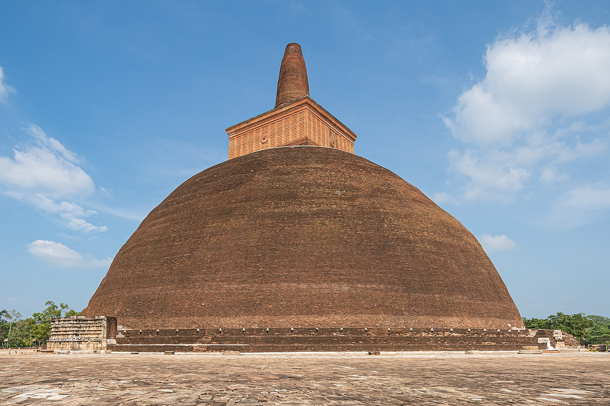
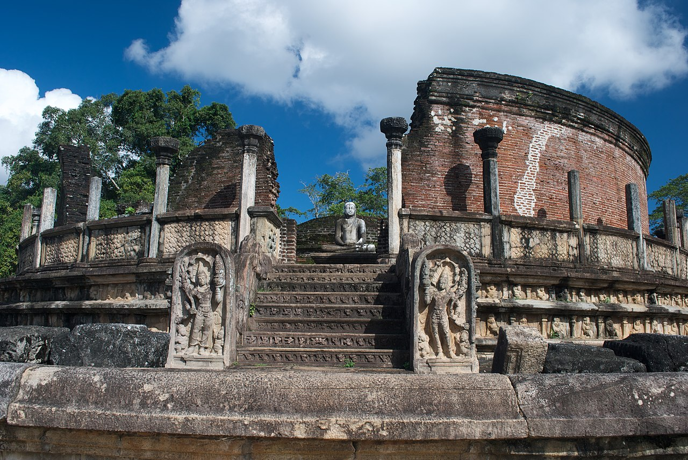
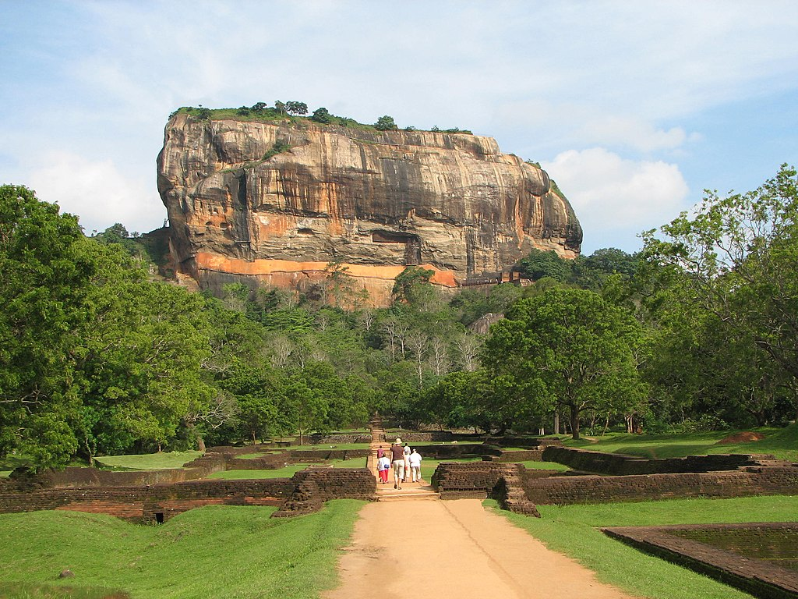

Sri Lanka has many cultural heritage sites, including ancient cities, temples, and other cultural landmarks
Scared city of anuradhapura
Anuradhapura was the first capital of Sri Lanka and a Buddhist spiritual centre. It was founded in the 4th century BCE

Ancient City of Polonnaruwa
Polonnaruwa became the capital of the eponymous kingdom under Vijayabahu I. Several Hindu temples and bronze sculptures remain from the period

Ancient City of Sigiriya
Sigiriya was the short-lived capital of King Kashyapa, who ruled between 477 and 495, after he had his father King Dhatusena killed. The city is built on and around the "Lion's rock", a 180 m (590 ft) granite volcanic plug.

Sacred City of Kandy
Kandy was founded in the 14th century and served as the capital of the eponymous kingdom from 1592 to 1815, when the British entered it. It remains the religious